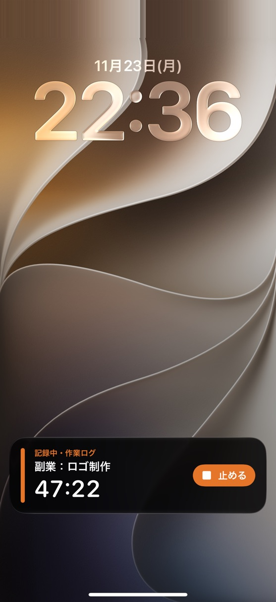
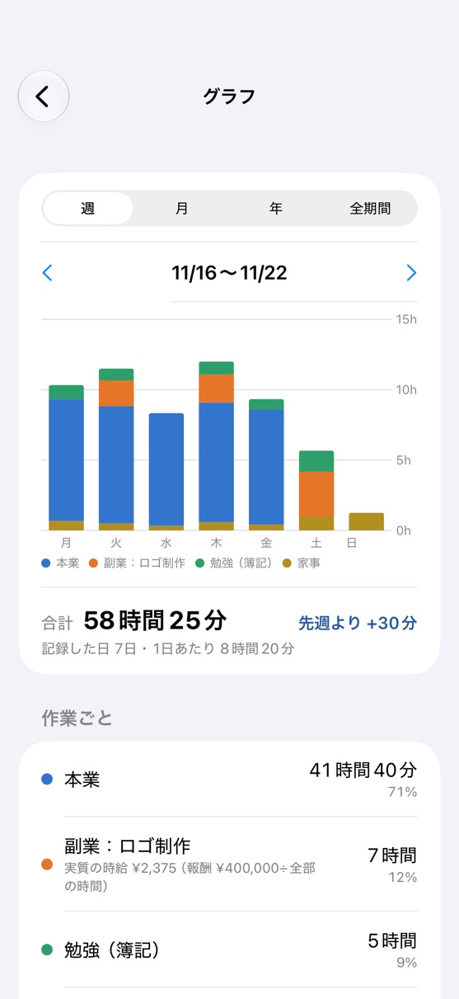
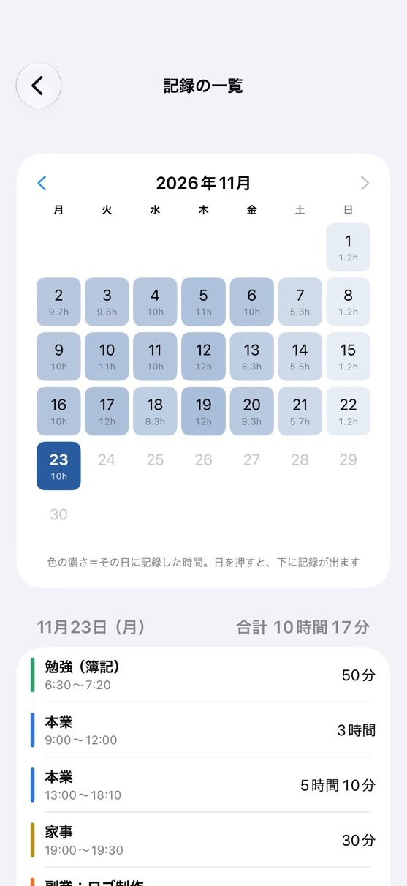

FEATURES
できること
ワンタップで切り替え
作業を押すと記録が始まり、別の作業を押すと切り替わります。前の終わり＝次の始まりなので、すき間も重なりもできません。
ロック画面で見られる
記録中は、ロック画面とダイナミックアイランドに今の作業と経過時間。アプリを開かずに止められます。
グラフで振り返る
週・月・年・全期間のグラフ。どの作業に時間を使ったかが色で分かります。押し忘れはあとから直せます。
記録が消えない
iPhoneとあなたのiCloudの両方に保存。入れ直しても、機種を変えても記録が戻ります。
SCREENS
画面



PRICE
値段
無料
¥0
- 記録・切り替え・ロック画面
- 週・月・年・全期間のグラフ
- 記録の直し・あとから足す
プラス
¥500（買い切り）
- 広告が消える
- 報酬から実質の時給
- 記録のCSV書き出し
2026年12月13日までに入れた方へ
2026年12月13日までにこのアプリを入れた方は、買わなくてもずっと全部無料で使えます（広告も出ません）。
2026年12月13日までにこのアプリを入れた方は、買わなくてもずっと全部無料で使えます（広告も出ません）。
FAQ
よくある質問
アプリを閉じたら、時間は止まりますか？
止まりません。始めた時刻を覚えて数えるので、アプリを閉じても、iPhoneの電池が切れても時間は進みます。
押し忘れた時はどうすればいいですか？
ホームの「あとから足す」か、「記録の一覧」で日を選んで「この日に足す」から入れられます。始めた時刻がずれた時は「始めを直す」で直せます。
ロック画面の表示は音楽のじゃまになりませんか？
このアプリは音を出さないので、音楽を止めることはありません。目立ち方はいちばん控えめにしていて、設定で出さないこともできます。
機種変更の時はどうすればいいですか？
同じ Apple アカウントで iCloud にサインインしていれば、新しいiPhoneに入れるだけで記録が戻ります。
実質の時給とは何ですか？
副業などの作業に報酬を入れると、報酬をその作業にかけた全部の時間で割った「実質の時給」を出します（プラス）。
SUPPORT
サポート
不具合・ご要望・ご質問は、メールでお知らせください。
お使いのiPhoneの機種・iOSのバージョン・アプリのバージョン（アプリの設定の一番下）を書いていただけると、早く調べられます。